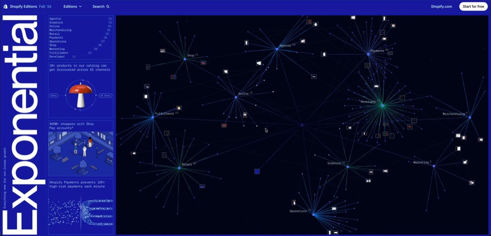
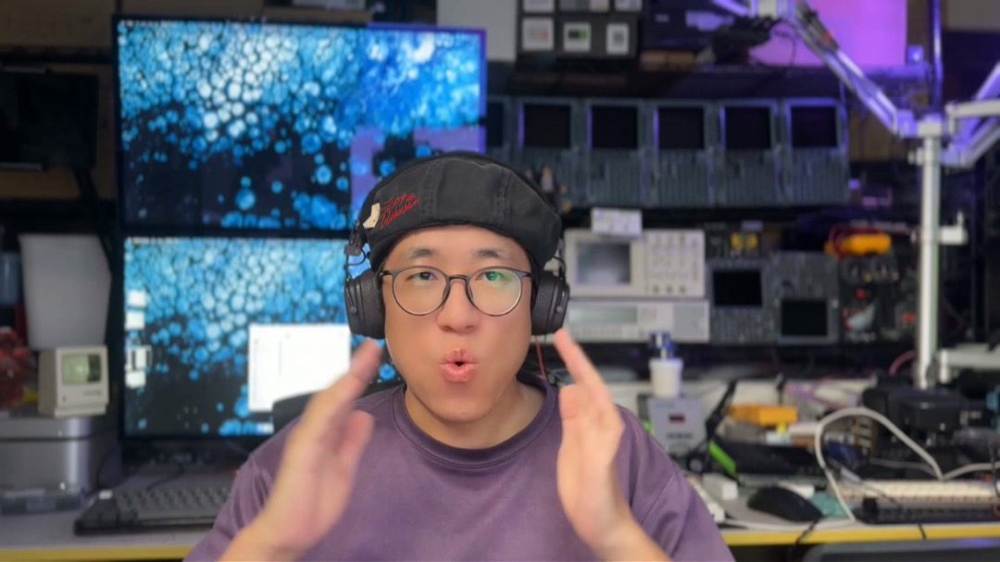

本期速览
01 Mac mini六项设置支撑远程常驻
04 PandaWiki一键导入文档打通问答
05 Go并发管线将行车视频转延时
06 币安遭内部入侵被盗63亿美元
07 AI语音延迟靠缓存预录与MTP
01｜Mac mini六项设置支撑远程常驻
来源（X） · @ai_suxiaole · 2026-10-30 15:00
半夜自己睡了、停电后来电没启动，人在外面只能干着急。
用来远程写代码、跑构建，睡眠、断电重启和远程登录都得提前设好。
① 别让机器自动睡眠
进入「系统设置 → 能耗」，打开：
- 当显示器关闭时，防止 Mac 自动进入睡眠
- 唤醒以供网络访问
- 断电后自动启动
显示器关掉，机器继续跑。
② 远程服务按需开启
进入「系统设置 → 通用 → 共享」：
- 要操作桌面，开「屏幕共享」
- 要用命令行，开「远程登录」，也就是 SSH
- 点旁边的 ⓘ，限定允许连接的用户
其他用不到的共享服务，保持关闭。
③ 设置账户密码和防火墙
允许远程登录的账户，使用长且不重复的密码。经常用 SSH，可以配置密钥登录。
进入「系统设置 → 网络 → 防火墙」，打开防火墙，再确认需要的远程服务能正常连接。
④ FileVault 决定重启后怎么解锁
FileVault（文件保险箱）会影响无人值守重启：
- 开启：磁盘有加密保护，但重启后通常需要先在本机输入密码解锁，常规远程服务才能启动，也无法设置自动登录。
- 关闭：系统启动后，已开启的远程服务通常可以在登录界面使用。需要进入桌面自动运行的软件，可以再考虑设置自动登录；代价是失去 FileVault 的磁盘加密保护。
远程连接不一定需要自动登录。根据机器存放位置、数据内容，以及重启后要运行的程序来选。
⑤ 系统更新留到方便的时候装
进入「系统设置 → 通用 → 软件更新」，点「自动更新」旁的 ⓘ，关闭「安装 macOS 更新」。
挑有空的时候手动更新、重启，再检查远程连接和任务，避免构建跑到一半被更新打断。
⑥ 记住两条终端命令
查看当前电源设置：
pmset -g
重点看这三项：
- sleep：0 表示不因空闲自动进入系统睡眠
- womp：是否允许网络唤醒
- autorestart：是否开启断电恢复后自动启动
临时让机器在任务结束前保持唤醒：
caffeinate -i make
把 make 换成要运行的命令。命令运行期间，Mac 不会因空闲进入系统睡眠。
改完拔掉显示器，隔一晚再远程连一次。再趁有人在机器旁边时重启一次，确认能连上、该跑的程序也起来了，再留着长期运行。
02｜Shopify推Agent购物平台
来源（X） · @mylifcc · 2026-10-29 22:00
他们使用了HTML-in-Canvas，这个Chrome还在测试的功能，放到了他们的生产环境！
与此同时这个生产环境叫做Exponential，是一个给Agent购物、下单的网站

03｜视频Skill需先提取参考制作规范
来源（X） · @miles_mazy · 2026-10-29 23:57
因为 Skill 解决的是制作流，不是审美能力！！
下次做视频，先别急着生成，把这段扔给 AI：
先不要急着生成视频。请深度拆解参考视频的视觉风格、排版体系、动画逻辑、转场节奏和镜头语言，提取成可复用的制作规范。再根据我的口播逐句设计画面，保证元素连续衍生、动效自然衔接。先制作10秒样片，对照参考视频检查差异，修正后再批量生成。
Skill 决定你能不能做出来，制作标准决定你做出来有多高级
04｜PandaWiki一键导入文档打通问答
来源（X） · @realchendahuang · 2026-10-30 13:03
现在做知识库的重要性不用多说，大家都想把文档资产和大模型问答打通。
丢链接或离线文件一键导入，自带排版与全局问答，能直接嵌进网页或接上飞书企微。
想自己搭企业知识库或者参考实现方案的，很值得一看。
github：https://github.com/chaitin/PandaWiki
05｜Go并发管线将行车视频转延时
来源（X） · @gopherconuk · 2026-10-30 17:00
中文译文
一次穿越加拿大西部的公路旅行给萨迪·弗里曼（Sadie Freeman）留下了540段一分钟的行车记录仪片段和超过100GB的素材，这对任何视频编辑器来说都太多了。于是萨迪用Go语言写了一个工具，把所有这些素材转换成了一段延时摄影。
这个演讲讲述了该项目从最简单的可行方案到完整并发流水线的全过程，包括无限制的goroutine把笔记本电脑搞崩的那一刻，以及关于何时并行运行真正有帮助的经验教训。
在这里观看完整演讲：https://youtu.be/6U1l2L50IeM
原文
One road trip across Western Canada left Sadie Freeman with 540 one-minute dashcam clips and over 100GB of footage, far too much for any video editor. So Sadie built a tool in Go to turn it all into a timelapse.
This talk follows that project from the simplest thing that worked to a full concurrent pipeline, including the moment unlimited goroutines took the laptop down, and the lessons on when running things in parallel really helps.
Watch the full talk here: https://youtu.be/6U1l2L50IeM
06｜币安遭内部入侵被盗63亿美元
来源（X） · @Sea_Bitcoin · 2026-10-30 10:42
数字：整体被盗金额是 63 亿，其中 30 亿已经被冻结。假设 30 亿全部可以追回，那就还剩 33 亿美元的窟窿。2025 年币安的营收大概在 55-60 亿，按 50-60% 净利润率推算，币安一年净利润在 25-35 亿之间，加上 SAFU 基金有 10 多亿美元，可以覆盖 33 亿的窟窿
原因：这次事件可能与一名 DevOps 工程师的笔记本电脑被入侵有关，攻击者利用该电脑访问了服务容器并提交了未经授权的提现交易
跟上次 Bitget 被盗事件有类似之处 (https://x.com/Sea_Bitcoin/status/2103276977352552537)，都不是私钥直接泄露，而是内部系统遭到入侵，进而绕过或滥用了正常的提现授权流程。只不过币安这次，黑客还利用了 EIP-7702 的委托执行机制，实现了大规模资产的批量转移
七八种主流山寨已经被抛完了，砸盘结果已经体现在价格上，剩下的就是市场信心慢慢恢复了...
引用内容
Sea @Sea_Bitcoin
今天的被盗疑似涉及 60 亿美元左右 (已经冻结 25.4 亿)，是加密历史上最大规模黑客攻击，超过此前 Bybit 的 15 亿美元、以及 Mt. Gox 在 2014 年暴雷时涉及的 85 万枚 BTC (当时价值约 4.8 亿美元)
现在很多技术分析指向 EIP-7702，但 7702 更可能是黑客实施攻击的工具，而不是钱包权限失守的根本原因
真正的问题是：黑客如何获得币安热钱包的有效授权？
是私钥直接泄露？签名系统被攻破？还是内部服务器遭到入侵？或者社会工程学攻击？这些都需要等待官方调查，并公布完整的事件报告
除了被盗代币的砸盘，比如 3100 多万 Pepe 已经被卖完了；整体市场和用户的信心也再次受到重创，太难了
07｜AI语音延迟靠缓存预录与MTP
来源（X） · @karminski3 · 2026-10-30 14:45
降低延迟3个思路, 一个是固定一下常用语音, 比如我录屏里AI经常说"右侧有敌人", 这个完全就可以先把生成好的语音录下来, 然后遇敌触发的时候直接播放语音, 都不用调用大模型重新生成.
另一个是缓存, AI 每次对话完毕后可以给它实时生成的语音缓存下来, 下次一旦说了同样的话, 直接用hash播放本地缓存. 这样即省语音合成API的钱, 也速度快.
还可以手动给AI做MTP, 比如: 现在的游戏情况是blablabla, 现在需要做出的决策是: 1, 进攻, 2, 躲避, 3, 开箱子......, 如果在上述情况, 请输出{"decision":n}. 否则请使用标准模板进行回复 然后利用大模型prefill速度快但decode速度慢的机制, 让它只吐非常少的 token, 这样能做到最快2秒左右就吐字. 然后程序立刻根据 {"decision":n} 随机出来一条缓存的符合情况的语音. 这样实时效果就非常好.
最后以上都不行怎么办? 利用人类的注意力缺陷, 人不太适应跟多个人说话, 所以我这里有个小设计, 当上面的加速规则都没办法命中, 进入兜底流程, 真的让kimi开始生成文本, 然后再走语音合成了. 那么这时候会给kimi 一个2s的超时, 它没回复立刻就让另外一个AI队友先聊一句无关痛痒的, 这时候你的注意力就会被拉开. 等到AI大概5s左右回复了也会觉得还行这个AI队友可能忙着舔包呢.
上面这几个流程加起来, 还要有个时效性FIFO队列, 我设计的队列深度是5, 也就是说, 会积累5条语音按顺序播放, 防止AI抢话或者同事说话. 然后一旦超过队列深度, 立刻淘汰头部的三条. 因为这种情况多半是已经在打架了, 快速获得最新的信息反而是正确的.
上面就是整体的思路啦. 是不是没啥难的嘿嘿.
引用内容
karminski-牙医 @karminski3
另外 Agent 能力这次也有提升, 最大的特性就是可以十分清晰的知道自己在 Agent 系统中的目标, 排除干扰项推进任务.
而本次表现最差的反而是之前很强的后端 Agentic Coding 能力. 最大的问题是它在难以获得信息的情况下, 判断过于悲观, 给自己设置了一个很小的超时, 被迫使用了性能差但是对超时友好的算法. 结果导致分数没有跑赢上一代 K3.
这里我给到的使用建议是, 它本身并不是不能写, 而是会预设状态, 所以在后端编程过程中, 最好先写 Plan, 再开始编码, 尽量减少信息差, 才能让它发挥实力.
#k31pro #kimik31 #kimik31pro #AgenticCoding #AIAgent
